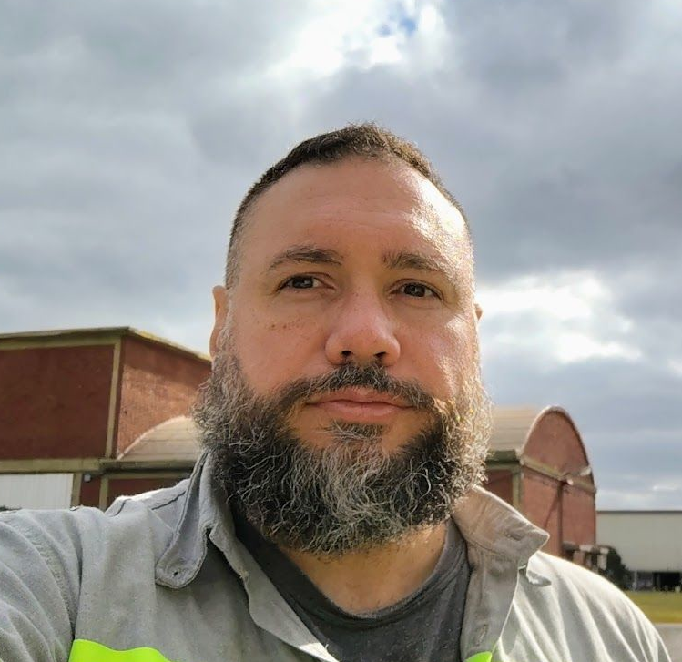

[TENARIS]
- Especialista en innovación de procesos industriales
- Enfocado en entornos críticos y procesamiento de datos complejos.
[ZIEL, BUJI]
- Desarrollador de sistemas de telemetría para la industria del Oil&Gas
Experiencia en optimización de rendimiento de infraestructura de software y resolución de contingencias operativas bajo protocolos estrictos corporativos.
[UTN - FRN]
- Jefe de trabajos prácticos para la materia de análisis de señales y sistemas.
[FREELANCER]
- Desallorador de software/hardware industrial
- Consultoria tecnológica
[TEIA]
- Desarrollador de sensores y sistemas de telemetría para la industria del Oil&Gas
- Administración y minería de datos
[HALLIBURTON]
- Técnico electrónico para servicios especiales: zone isolation, coiled tubing y production enhancement.

REF: CONSOLA_DATOS_MU-TH-UR